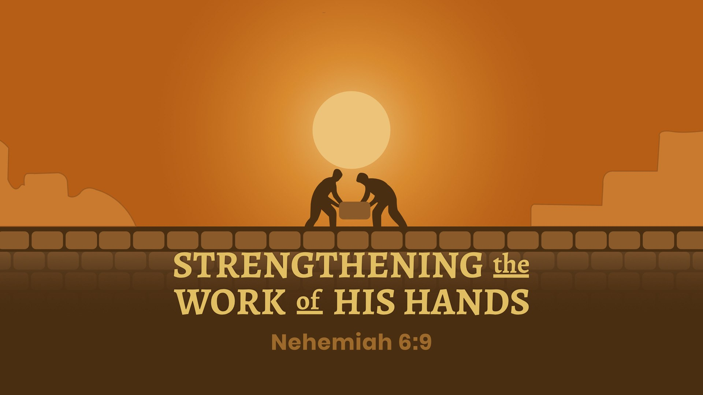

Blessed Hope Baptist Church
Why we exist and where we are going.
"Go ye therefore, and teach all nations, baptizing them in the name of the Father, and of the Son, and of the Holy Ghost: Teaching them to observe all things whatsoever I have commanded you."
Matthew 28:19–20
The mission of Blessed Hope Baptist Church is the same mission the Lord Jesus Christ gave to His church: go and make disciples. Every ministry we have, every service we hold, and every door we open exists to fulfill that one great commission. We believe the local church is God's primary instrument for reaching the lost and grounding the saved, and we take that calling seriously.
Our vision is to be a faithful, gospel-preaching church that serves as a beacon of truth in Batavia and the surrounding communities of Genesee County. We want to see lives transformed by the power of the gospel, families strengthened by the Word of God, and believers equipped to take the message of Christ into every corner of our community and beyond.
Every Sunday, the Bible is opened and preached without apology. We believe the Scripture is sufficient for every need of life and ministry.
Disciples are made through faithful instruction. Through Sunday School and Wednesday night Bible Study, we are committed to growing together in the Word.
The church is a family. We are committed to bearing one another's burdens, encouraging one another in the faith, and reflecting the love of Christ to all who walk through our doors.
We exist for the people who are not yet here. Through personal soul winning, community outreach, and the faithful witness of every member, we want to see Batavia reached with the gospel.
2026 Church Theme
Nehemiah 6:9
Nehemiah faced opposition, discouragement, and pressure from every direction. His answer was not to come down from the wall. Our theme for 2026 is drawn from his example: the work God has given us in Batavia is worth strengthening, and we will not stop to appease those who would distract us from it.

We would love to have you join us for a Sunday service and experience the ministry of Blessed Hope Baptist Church for yourself.